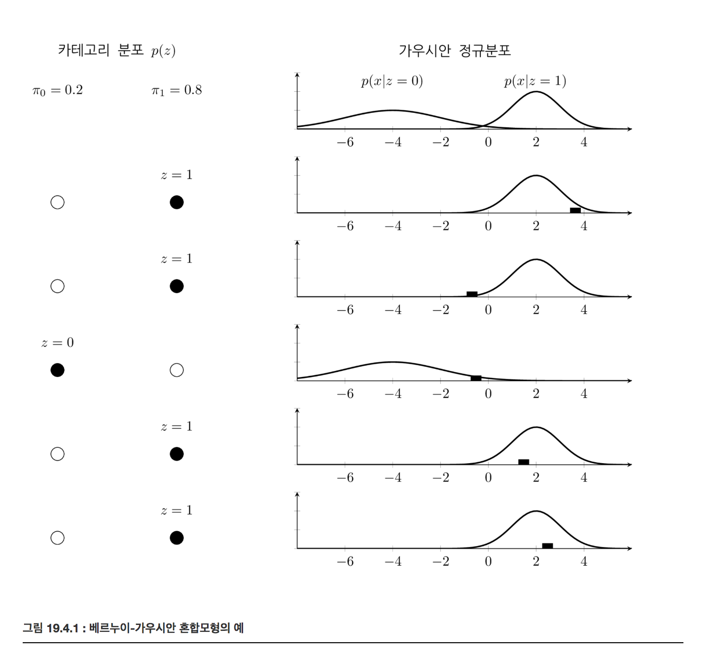
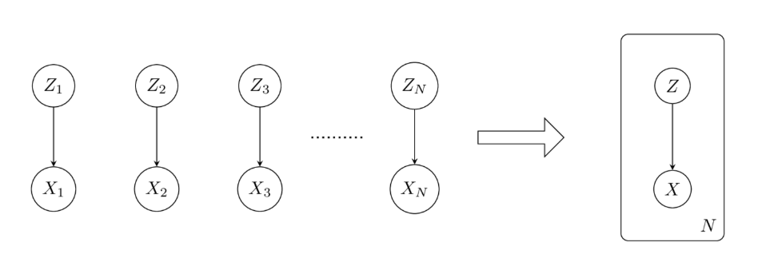

가우시안 혼합모형과 EM 방법
Summary
- 가우시안 혼합모형은 실수값을 출력하는 확률변수가 클래스 카테고리 확률변수의 값에 따라 다른 기댓값과 분산을 가지는 복수의 가우시안 정규분포들로 이루어진 모형이다
- 가우시안 혼합모형의 모수추정 방법으로는 EM방법이 있다.
- EM 방법은 모수()와 responsibility(hidden state, )를 번갈아 추정하며 정확도를 높여가는 방법이다. 잠재변수 에 의존하는 확률변수 가 있고 는 관측 불가능하며 만 관측할 수 있는 경우 확률분포 를 추정하는 방법이다.
가우시안 혼합 모형
K-클래스 카테고리 확률변수 Z가 있다고 하자. 확률 분포함수는 이다. 실수값을 출력하는 확률변수 X는 확률변수 Z의 표본값 k에 따라 기댓값 , 분산 이 달라진다.
이를 결합하면 이 된다.
실수값을 출력하는 확률변수 X가 K-클래스 카테고리 확률변수 Z의 값에 따라 다른 기댓값과 분산을 가지는 복수의 가우시안 정규분포들로 이루어진 모형을 가우시안 혼합 모형(Gaussian Mixture) 모형이라고 한다.
단 가우시안 혼합모형에서 카테고리 확률변수 Z의 값을 알 수가 없다. 즉 관측되지 않는다고 가정한다. 이렇게 관측 데이터가 보이지 않는 즉, 내부에 숨겨진(latent) 확률 변수를 포함하는 모형을 잠재변수모형(latent variable model)이라고 한다. 잠재변수는 혼합모형 처럼 카테고리값이 될 수도 있고 다른 모형에서는 실수값도 될 수 있다.
베르누이 - 가우시안 혼합 모형
카테고리가 두 개인 가우시안 혼합모형은 베르누이-가우시안 혼합모형이라고 한다.

가우시안 혼합모형의 모수추정
가우시안 혼합모형 모수추정은 관측되지 않는 카테고리 분포의 확률분포와 각각의 카테고리에서의 가우시안 정규분포 모수를 추정하는 것을 말한다.
N개의 데이터에 대한 X의 확률분포는
로그를 취하면
두 식 모두 미분값이 0이 되는 모수값을 쉽게 구할 수 없다.
만약 데이터 가 어떤 카테고리 에 속하는지를 안다면 같은 카테고리에 속하는 데이터만 모아서 카테고리 확률분포 도 알 수 있고 가우시안 정규분포의 모수 도 쉽게 구할 수 있을 것이다. 하지만 실제로는 데이터 가 가지고 있는 카테고리 값 를 알 수가 없기 때문에 위 확률분포함수 를 최대화하는 와 𝜇𝑘,를 비선형 최적화를 통해 구해야 한다.
네트워크 확률모형 관점에서는 확률변수 가 확률변수 에 영향을 미치는 단순한 모형이다. 다만 인 모든 경우에 대해 반복적으로 영행을 미치므로 이를 다음과 같은 판넬 모형으로 표현한다.

EM(Expectation-Maximization)
혼합모형의 모수추정에서 중요한 역할을 하는 것 중의 하나가 바로 각 데이터가 어떤 카테고리에 속하는가를 알려주는 조건부 확률 값이다. 이 값을 responsibility라고 한다.
가우시안 혼합모형의 경우 다음과 같이 정리할 수 있다.
이 식은 모수로부터 responsibility를 추정한다.
- 는 i번째 데이터 가 카테고리 에서 만들어졌을 확률을 나타낸다.
이제 로그-결합확률분포함수를 최대화 한다. 우선 로 미분하여 0이 되도록 하는 방정식을 만들면 다음과 같다.
이를 정리하면
k 카테고리에 속하는 데이터의 수와 비슷한 의미를 가진다. 즉 는 k카테고리에 속하는 데이터의 샘플 평균과 같은 의미이다.
마찬가지로 로그-결합확률분포함수를 Σ𝑘Σk로 미분하여 최대화하는 모수값을 구하면 다음과 같다.
마지막으로 로그-결합확률분포함수를 로 미분하여 최대화하는 모수값을 구해야 하는데 이 때 카테고리값의 모수가 가지는 제한 조건으로 인해 Lagrange multiplier 를 추가해야 한다.
- 이를 로 미분하여 0이 되는 값을 찾으면 다음과 같다.
이 세가지 식은 모두 responsibility로부터 모수를 구하고 있다.
원래는 연립방정식의 해를 구하는 방법으로 responsibility를 포함한 모수값을 추정해야 한다. 그러나 만약 식의 형태가 responsibility를 알고 있다면 모수를 추정하는 것이 간단하도록 만들어져 있기 때문에 EM(Expectation-Maximization)이라고 하는 iterative 방법을 사용하면 연립방정식의 해를 구하는 것보다 더 쉽게 모수를 추정할 수 있다.
EM 방법은 모수와 responsibility를 번갈아 추정하며 정확도를 높여가는 방법이다.
- E step 에서는 우리가 현재까지 알고 있는 모수가 정확하다고 가정하고 이를 사용하여 각 데이터가 어느 카테고리에 속하는지 즉, resposibility를 추정한다.
- M step 에서는 우리가 현재까지 알고 있는 responsibility가 정확하다고 가정하고 이를 사용하여 모수값을 추정한다.
- 이를 반복하면 모수와 responsibility를 동시에 점진적으로 개선할 수 있다.
클러스터링
각각의 데이터에 대해 responsibility을 알게되면 responsibility가 가장 큰 카테고리를 찾아내어 그 데이터가 어떤 카테고리에 속하는지를 알 수 있다. 즉 클러스터링을 할 수 있다.
사실 K-means clustering은 EM 방법의 특수한 경우라고 볼 수 있다.
일반적 EM 알고리즘
EM 알고리즘은 잠재변수 에 의존하는 확률변수 가 있고 는 관측 불가능하며 만 관측할 수 있는 경우 확률분포 를 추정하는 방법이다. 다만 네트워크 모형에 의해 조건부확률분포 는 모수 에 의해 결정되며 그 수식은 알고 있다고 가정한다.
혼합모형의 경우에는 가 이산확률변수이므로
- 쌍봉이고, 단봉이다. 는 x 분포가 어떤 모양을 나타내는 파라미터 이다.
주어진 데이터 에 대해 가능도 를 가장 크게 하는 잠재변수에 대한 확률분포 와 를 구하는 것이 EM 알고리즘의 목표이다.
에서 는 우리가 구라혀를 likelihood 이고 에서 p는 z에 대한 likelihood 값이다.
EM 알고리즘은 를 최대화하기위해 와 의 최적값을 교대로 찾아낸다.
(1) E 단계에서는 를 현재의 값 으로 고정시키고 를 최대화하는 를 찾는다. 맞게 찾았다면 는 상한인 와 같아진다. 즉 쿨백-라이블러 발산은 0이된다.
(2) M 단계에서는 를 현재의 함수 로 고정시키고 를 최대화하는 값을 찾는다. 최대화를 하였으므로 당연히 는 옛날 값보다 커진다.
그리고 동시에 이 과거의 값 과 달라졌으므로 는 와 달라진다. 그러면 쿨백 라이블러 발산의 값도 0보다 커지게 된다.